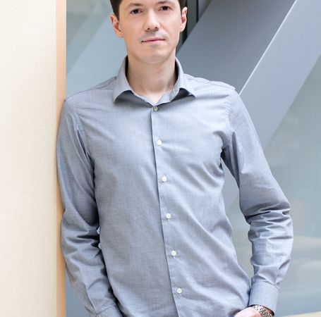
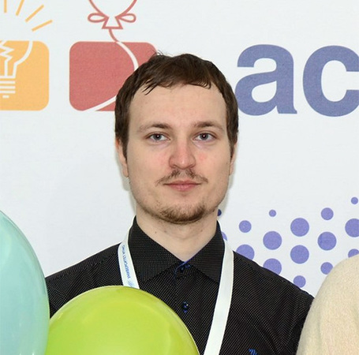
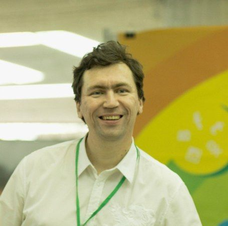
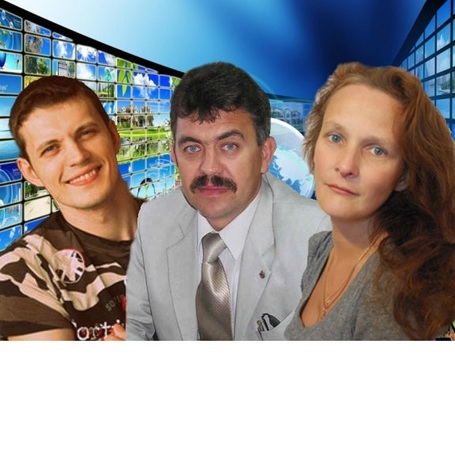
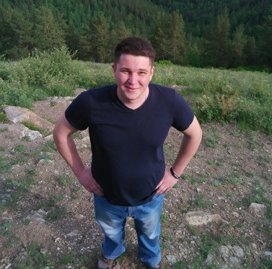
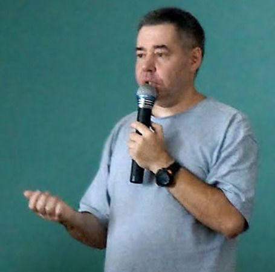
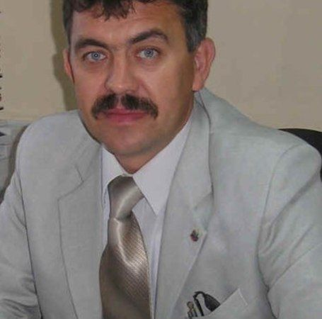
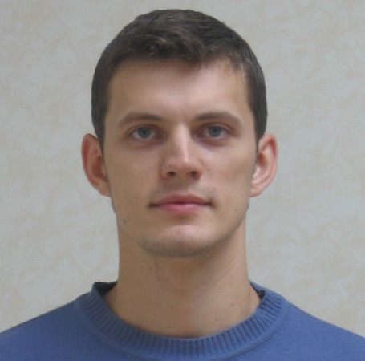
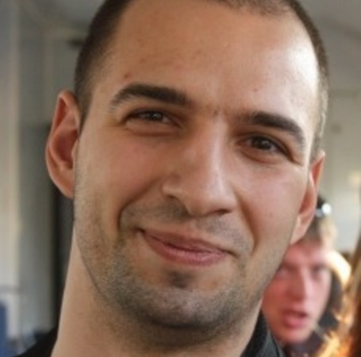
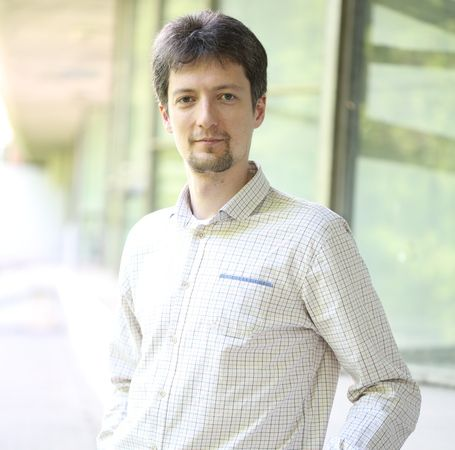

Доклады
-
Страх Николай Предприниматель и трекер ФРИИ ,
Мастер класс. Студии цифровых решений: внутренние и клиентские проекты. Как не облажаться и заработать деньги на стартапе.
- как перейти от проектного бизнеса к масштабируемому;
- топ ошибок студий при работе с внутренними проектами;
- MVP для клиентского стартапа;
- как стартап поможет решать hr задачи. -
Страх Николай Предприниматель и трекер ФРИИ ,
Акселератор ФРИИ и Майкрософт: от технологического решения к масштабируемому бизнесу.
- ожидания инвестора и подход к оценке проекта;
- поддержка Microsoft на preseed и seed раундах;
- ускорение: всё или ничего;
- опыт Lastbackend и Турбодирел. -
Волошин Дмитрий Mail.Ru Group , Директор департамента исследований и образования
Нанимать нельзя учить. Где поставить запятую, если речь идет о студентах?
В докладе будет резюмирован пятилетний опыт создания программ обучения разработчиков на базе крупнейших технических вузов, а также стажерской программы в крупнейшей российской интернет-компании. Основные вопросы:
- как продать бизнесу стажерскую программу?
- как продать коллегам обучение в вузе?
- как продать вузу обучение на его базе?
- как продать студентам обучение от компании?
- как продать студента как стажера в компании? -
Сергей Кулешов 1С-Битрикс , Заместитель генерального директора
1С-Битрикс, Бизнес, как череда успешных ошибок
.
-
Васильев Дмитрий Netcat , Директор
Методика персонажей-сценариев в проектной работе
Алан Купер - автор методики персонажей-сценариев - придумал её для проектирования информационных систем. Я расскажу о применении её в коллективной работе над веб-проектами - собственными и заказными - начиная с проектирования и заканчивая аудитом и продвижением.
-
Оселедько Сергей Notamedia , Управляющий партнер
Корпоративная идеология: 3 ценности и 7 принципов аккаунт-директоров и руководителей проектов.
На примере личного опыта, Сергей расскажет о том:
Что такая ключевая идеология и как ее выявить.
Как на основании идеологии сформировать ценности и принципы работы для сотрудников digital-агентства.
Как построить систему управления ресурсами на основе этих принципов и ценностей и как контролировать большой объем ресурсов.Доклад будет полезен как для владельцев веб-студий, так и для клиентов.
-
Фолунин Владимир УлГТУ , Преподаватель
Программирование для самых маленьких: опыт преподавания в ДТЦ «Инженерка»
1. Выбор программы: что можно изучать на занятиях, а что — не стоит.
Мы учим десятилетних детей писать на C: как, зачем и нормально ли это?2. Они же дети: как сделать обучение нагляднее.
Какие задачи понравятся детям? Можно ли незаметно ввести (нелюбимую в школе) математику? Какие средства кроме компьютера могут помочь усвоить новые знания?3. Учебный курс, кружок по интересам или что-то среднее?
Что важнее — сформировать нужный набор навыков или пробудить интерес к творчеству? Как, исходя из этого, следует организовывать занятия? Какими могут быть дальнейшие ступени обучения? -
Нуруллова Альбина МБОУ гимназия №33 , заместитель директора по НИЭР и ИТ
Не стреляйте в информатика - он учит как умеет!
30 лет курсу информатики в школах, пора подводить итоги:
Что мы знаем про ИТ-специальности?
Готовит ли школа своих учеников к обучению в вузе по ИТ -специальности?
Какой язык выбрать при изучении школьного курса информатики?
Учить язык или разбирать алгоритмы?
Абстрактное или конкретное?
Процедурное или объектное?
И где во всем этом ученик? -
Негода Виктор УлГТУ , профессор
Превращение областного чемпионата школьников по программированию в инструмент обучения
Региональные чемпионаты школьников по программированию обычно проводятся как эпизодические мероприятия - один раз в год.
В рамках первого чемпионата ИТ-сферы Ульяновской области среди школьников, проведенного в 2015 году, технологии и средства организации соревнований по спортивному программированию применялись в течение года. Проведено 11 турниров, общее время доступа к машинам автоматической проверки решений - около 15 недель, общее число правильных решений - 1087, что превосходит аналогичные показатели традиционных чемпионатов других регионов во много раз. Возникают многообразные варианты развития турнирного движения в сторону поддержки обучения программированию непосредственно в школах: развитие мотивации, внедрение технологий геймификации, организация постоянного тренировочного процесса. Хочется обсудить эти варианты с заинтересованными людьми. -
Макаров Павел, Букина Елена Мастер ИТ , Директор
Как мотивировать школьников на путь в ИТ: один из подходов
13 лет практического опыта мотивации школьников в информационных технологиях.
Ежегодный региональный Конкурс компьютерного творчества школьников "Мастер ИТ" - путь в 13 лет.
Этапы конкурса, подходы.
Взаимодействие со школами, учителями, вузами, властными структурами.
Мотивация учителя на мотивацию учеников. -
Шабалкин Дмитрий Ульяновский государственный университет , зам. директора Центра компетенций "Авиационные технологии и авиационная мобильность"
"Цифровое производство". Кадры решают всё
1) IT-решения как основной инструмент "Цифрового производства"
2) Что ждут высокотехнологичные отрасли от выпускника вуза
3) Опережающая подготовка кадров: Как и что должен делать вуз
4) Системные вызовы и системные решения.
5) Обучение "через" внедрение
6) Положительный и отрицательный опыт подготовки и переподготовки носителей IT-решений -
 Пирог Татьяна НК "Прожект Хармони, Инк" , Координатор проекта
Пирог Татьяна НК "Прожект Хармони, Инк" , Координатор проектаКод-классы.
“Код-Класс” - всероссийская инициатива проекта “Твой курс: ИТ для молодежи” по созданию сети открытых клубов программирования для школьников. Cеть открытых клубов программирования создается, чтобы помочь молодым людям открыть для себя удивительный мир программирования, компьютерных наук и IT профессий. В проекте объединяются талантливые педагоги, которые стремятся к собственному профессиональному развитию и готовы вести за собой учащихся в мир новых технологий. В рамках проекта для школьников и педагогов проводится различные мероприятия, направленных на изучение языков программирования, соревнования и конкурсы, профориентация в ИТ сфере. Из доклада можно узнать: как образовательным организациям стать участником проекта, педагогам повысить свой профессионализм и изучить новые языки программирования и методику преподавания, а школьникам проявить себя в области ИТ и сориентироваться в выбор будущей профессии.
-
Ямкина Елена, Некрасов Дмитрий, Причалов Николай МБОУ СШ №37, МБОУ СШ №29 , МБОУ СОШ №1 , Представители школ
Оснащение школ компьютерным оборудованием и проблема его обслуживания
Процесс информатизации образования
Оценка эффективности
ПК и ПО взаимосвязано?
Отчетность
Обслуживание. Кто? Учитель?
Финансирование (расходные материалы, мелкий ремонт, комплектующие детали)
Информационное образовательное пространство -
Горбаров Илья Студия Атвинта , Технический директор
Мотивация ИТ-персонала — шаг за шагом
Почему мы вообще поднимаем эту тему? Вовсе не потому, что это такой сладкий пирог для нескончаемых холиваров, где каждому есть что сказать, а потому, что сформировав свое системное видение в этом направлении, мы считаем возможным транслировать его и совершенствовать для себя.
Да, у нас действует почасовая система оплаты труда для разработчиков и дизайнеров и нам удалось сделать ее мотивирующей. Как? Приходите и узнавайте. Очень важно не только работать с теми кто есть, но и формировать себе команду постоянно, на перспективу. Для этого мы используем стажировки, конкурсы и другие методы внимательного и нежного взращивания "тех самых" кадров.
-
Дединский Илья МФТИ , старший преподаватель
Аналитический подход к довузовскому преподаванию программирования
Программисты в России часто растут «как трава». Ее никто толком не выращивает, она «сама» пробивается сквозь асфальт и камни, ЕГЭ и олимпиады. Хорошо ли это?
Этот доклад о том,
- как вырастить потенциального IT-профессионала еще в школе, и не во вред другим предметам,
- как не переучивать многократно школьника - в вузе, студента - на работе,
- как не получить спортсмена-олимпиадника, теряющегося от программы в тысячу строк и не умеющего толком применить любимые им алгоритмы,
- как получить от вуза максимум, на который преподаватели, может быть, даже и не рассчитывали, :)
- как повысить качество отечественного IT-образования и начать выпускать, наконец, конкурентоспособных специалистов не чудом, а по плану. -
Причалов Николай МБОУ СОШ №1 р.п.Новоспасское , учитель физики и информатики
Оснащение школ компьютерным оборудованием и проблема его обслуживания
Процесс информатизации образования
Оценка эффективности
ПК и ПО взаимосвязано?
Отчетность
Обслуживание. Кто? Учитель?
Финансирование (расходные материалы, мелкий
ремонт, комплектующие детали)
Информационное образовательное пространство -
Некрасов Дмитрий МБОУ СШ №29 , Зам. директора по ИКТ
Оснащение школ компьютерным оборудованием и проблема его обслуживания
Процесс информатизации образования
Оценка эффективности
ПК и ПО взаимосвязано?
Отчетность
Обслуживание. Кто? Учитель?
Финансирование (расходные материалы, мелкий ремонт, комплектующие детали)
Информационное образовательное пространство -
Мокевнин Кирилл hexlet , Со-Основатель
Исследования и опыт хекслета в обучении разработчиков
- С чем приходят люди. Опасные ожидания.
- Почему одних курсов недостаточно.
- Как онлайн курсы могут испортить мышление.
- Страхи и Ловушки в которые попадают новички.
- Важность ограничений в обучении.
- Способы организации выполнения практики. Влияние на скилл. -
Немытченко Иван GitLab , Developer Advocate
Почему диплома недостаточно для того чтобы стать программистом и как быть
В российском высшем образовании, кажется, не разочаровались только совсем законченные идеалисты. Многие соглашаются с тем, что оно "учит думать", но практических навыков дает меньше, чем хотелось бы. Наиболее сообразительные практикуются самостоятельно с самых первых курсов. Но речь не столько о навыках программирования, сколько о навыках разработки программного обеспечения. Разберемся, чем одно отличается от другого и где набираться недостающего.
-
Сергей Кулешов 1С-Битрикс , Заместитель генерального директора
Бизнес-девелопмент для Saas-сервисов: дизайн-проектирование стратегии
Разработка Saas и вывод его на рынок становится все более сложной задачей в современных условиях. Стоимость привлечения новых пользователей зачастую превышает заработок на клиенте (LTV), но еще хуже дело обстоит с разработкой стратегии сервиса до начала программирования. Давайте порассуждаем о современных реалиях и сделаем бизнес-девелопмент обязательной частью проектирования.
-
Шведова Анна Simbirsoft , аналитик
Были бы кости, а мясо нарастет: как вырастить аналитика из того, что приплыло
Расскажу, как выявить потенциального бизнес аналитика из тех, кто никогда этим не занимался. Через что проходят соискатели сами того не подозревая, и почему мы в конце семи кругов собеседований знаем о кандидате больше, чем он сам о себе.
Что должно произойти, чтобы человек осознал в себе призвание и начал раскрывать свои таланты.
В докладе поделюсь «непрофессиональным хитростями», которые мы протестировали на себе и применяем на собеседованиях. -
Кибалко Кирилл Быстроденьги , CIO
Управление релизами в федеральной компании: на что мы потратили более 150 миллионов рублей?
- Внедрение проектов в финансовом секторе
- Управление релизами
- Стратегия внедрения проекта в точные сроки -
Святов Кирилл УлГТУ , декан ФИСТ
Современное ИТ-образование в высшей школе: между трех огней
- Современные студенты. Поколение Z. Что изменилось за 20 лет?
- Специфика работы вузов в системе "государство - бизнес - общество".
- Высшее ИТ-образование для специалистов на долгом пути "школа - вуз - ИТ-отрасль".
- Системный подход или узкая специализация? Для чего нужно высшее образование в ИТ?
- Инновации и техническое творчество. Просто модная тенденция или вызов для ИТ-компаний?
- Вузы в системе повышения квалификации ИТ-профессионалов. -
Старостин Дмитрий МБОУ Лицей при УлГТУ , учитель информатики и ИКТ
От игры к профессии: создание благоприятной IT-среды для школьников.
Как воплотить интерес в увлечение? Как легко создать игру (на примере Unity) и параллельно освоить профессиональный язык программирования? Как сделать первый шаг на пути к желанию стать программистом? Проведённый эксперимент (в виде краткого внеурочного курса) по превращению обычного школьника в увлечённого программированием человека расскажет Вам об этом. Вы узнаете:
-какие инструменты задействовали;
-как расставили приоритеты;
-наши планы по продвижению курса на будущее. -
Рахимбердиев Аскар МойСклад , Генеральный директор
Процесс разработки в МоемСкладе: анархия под контролем
- Отбор тикетов в разработку: соревнование и баланс
- Большие ежемесячные релизы vs. Continuous integration
- Информированность всей команды
- Если что-то пошло не так: контроль качества и мониторинг -
Ямкина Елена МБОУ СШ №37 , Заместитель директора по ИКТ
Оснащение школ компьютерным оборудованием и проблема его обслуживания
Процесс информатизации образования
Оценка эффективности
ПК и ПО взаимосвязано?
Отчетность
Обслуживание. Кто? Учитель?
Финансирование (расходные материалы, мелкий ремонт, комплектующие детали)
Информационное образовательное пространство -
Власенко Олег СимбирСофт , заместитель директора
Где и как найти "профи" для растущей ИТ компании?
Все говорят: "Людей нет!". Все говорят: "Вузы не те! Студенты - никакие!". Все говорят: "Профи не лояльны, они уходят на "+1" рубль к конкурентам". Все говорят: "Лучшие уезжают в Москву!". И все они правы!
Тогда вопрос - а как появляются и растут в регионе, множество ИТ компаний реально мирового уровня, которые входят в лучшие рейтинги страны, которые являются мировыми лидерами в своих сегментах?
На примере самой большой региональной компании, успешно растущей уже много лет, я расскажу, как в условиях жесткой конкуренции, в условиях страшного дефицита, в условиях поколений Y и Z, мы успешно находим "профи", которые и составляют нашу компанию.
-
Гуслева Анастасия Uplab , HR-менеджер
Знания — очень странный предмет: вроде бы есть, а вроде бы нет. Как мы строили систему управления знаниями.
- Кому? Зачем? Для чего вообще нужна СУЗ
- Что такое знания и в чем их отличие от данных и информации
- Как из хаоса получить систему
- Разделяй и властвуй. Хранение информации, доступы и защита. Почему это важно.
- Создать - не главное. Как добиться, чтобы система жила. Внедрение и развитие. -
Квартальнов Роман ZephyrLab , Founder & CEO
Бизнес-коллоквиум с пользой для команды и компании
На первый взгляд все воспринимают аттестацию как необходимую и обязательную формальность, в каких-то компаниях вообще не тратят время на подобные ежегодные встречи. Во время работы в IT-холдинге я проводил аттестацию своего отдела, но при этом вносил свои коррективы как в сам процесс, так и в содержание. Сейчас в своей дизайн-студии я продолжаю практику ежегодных коллоквиумов. Хочу рассказать, почему аттестация одинаково важна как для сотрудников, так и для руководителей, какие проблемы помогает решить.
Вы узнаете о том, как:
• грамотно организовать этот процесс оценки;
• правильно построить диалог для выявления потребностей, ожиданий, возможностей и навыков сотрудников;
• выявить тревожности и опасения;
• синхронизировать ваше видение и видение сотрудников о компании;
• выявить, что критически важно для сотрудника в данный период времени;
• можно повлиять на эффективность подчинённых.